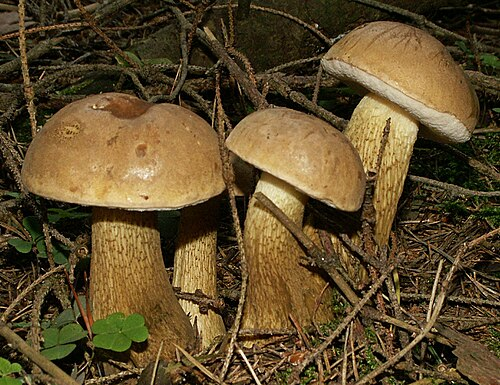
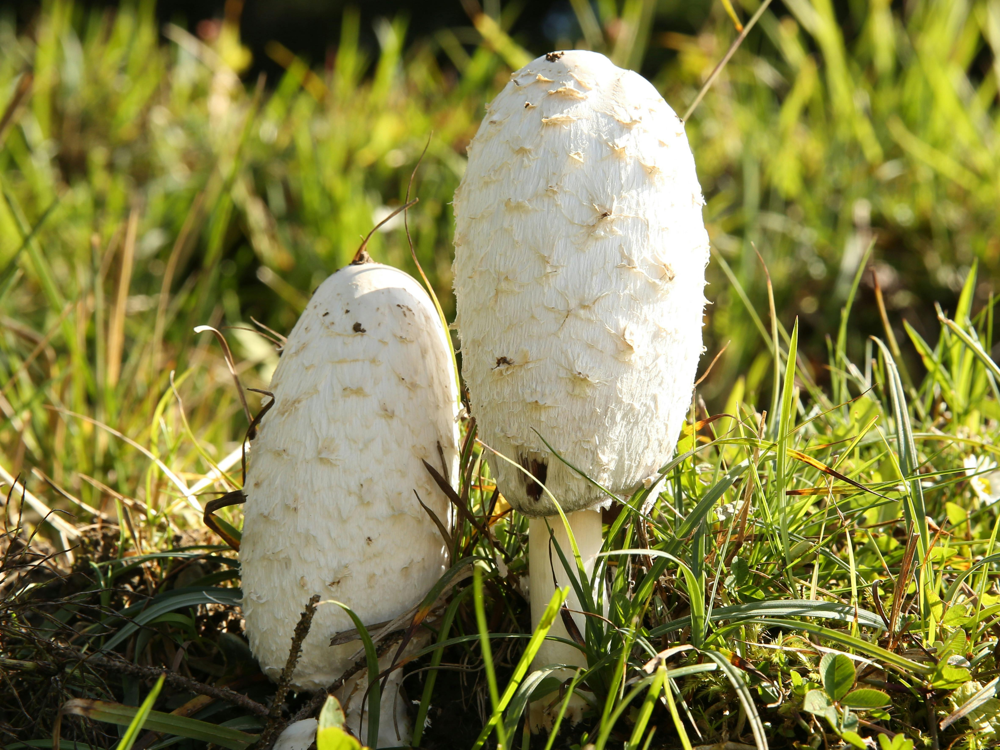

Giftiga svampar


Gallops - Gallops är en oätbar svamp som ser ut som karl johan men är inte giftig. Den kan separeras från
karl johan genom ett rödaktigt rör eller kanske mer känd som stammen.

Vit flug svamp - Den vita flug svampen är nog den mäst dödliga svampen man kan hitta i severige eftersom den producera amatoxiner vilket
är cellskadadande gift. Vilket vid flera tillfällen dödat ful vuxna människor.
Matsvampar